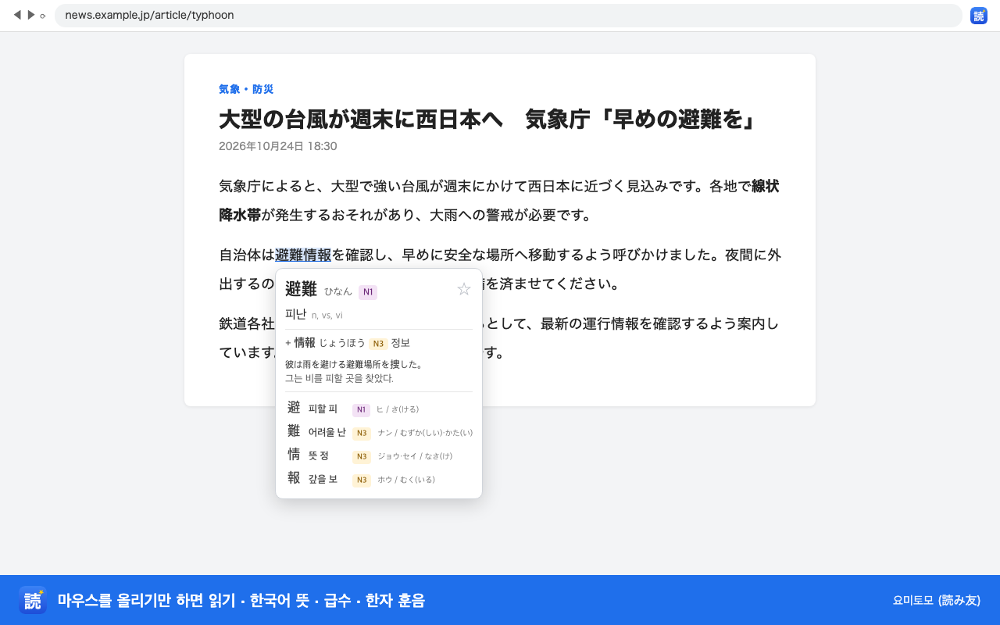
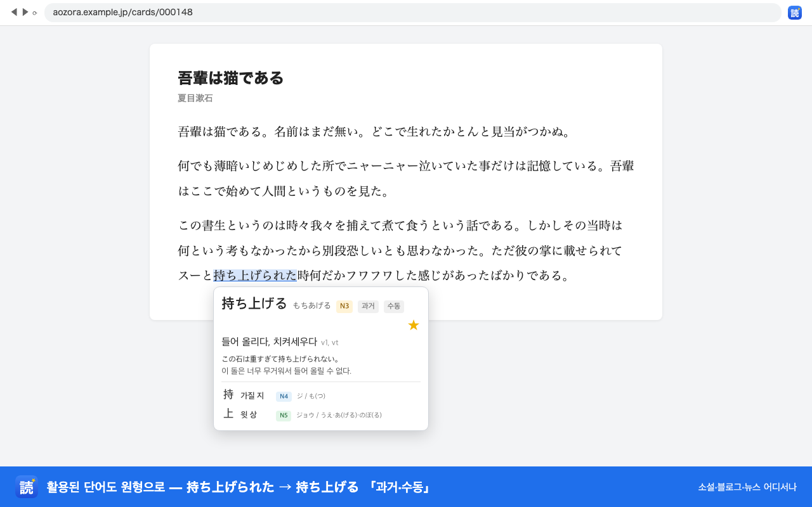
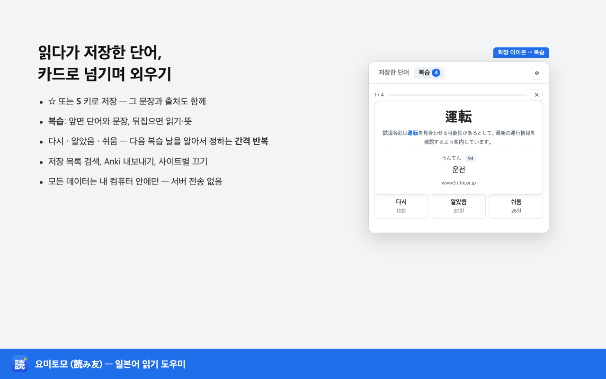

뉴스·블로그·소설을 원문으로 읽는 한국어 학습자를 위한 크롬 확장 프로그램. 읽기, 뜻, JLPT 급수, 한자 훈음까지 한 창에. 읽는 페이지와 저장한 단어는 내 컴퓨터 밖으로 나가지 않습니다.
크롬에 추가하기 어떻게 쓰나요?전부 무료. 크롬·엣지·브레이브 등 크로미움 브라우저. 설치 후 Alt+J 로 켜고 끕니다.
정중형·과거·수동·て형이 섞여 있어도 원형을 찾아 뜻을 보여 주고, 어떤 활용인지 표시합니다.
사전에 한 덩어리로 없는 긴 한자어도 아는 조각으로 풀어 보여 줍니다.
단어 속 한자 하나하나의 훈음과 음독·훈독을 함께. 모르는 한자도 그 자리에서 익힙니다.
沖縄, 夏目漱石 같은 지명·역·성·인명 읽기와 가타카나 외국 이름까지 42만 개를 알려 줍니다.
☆ 또는 S 키로 저장하면 그 문장과 페이지 주소도 함께 남습니다. 「복습」 탭에서 카드로 넘기며 외우고(간격 반복), ☆ 한 번에 Anki 덱에도 넣습니다.
사전이 확장 안에 들어 있어 인터넷 없이 동작합니다. 읽는 페이지 내용, 저장한 단어, 설정 모두 내 컴퓨터 안에만.



뉴스·위키백과·소설 783편으로 직접 재 보니, 마우스를 올린 자리의 92%에서 한국어 뜻이 맨 위에 뜹니다. 한국어가 없는 단어는 영어 뜻과 한국어 조각을 보여 줍니다. 한국어 뜻 데이터는 CC BY-SA 4.0 으로 공개합니다.
지금은 크롬과 크로미움 계열(엣지·브레이브·웨일·아크)에서 됩니다. 맥 사파리 판은 다음 단계로 준비하고 있습니다.
됩니다. 사전이 확장 안에 들어 있고, 요미토모는 인터넷으로 아무것도 보내지 않습니다.
컴퓨터용 Anki(무료)에 무료 확장 프로그램 AnkiConnect(코드 2055492159)를 깔고, 요미토모 설정(⚙)에서 「연결」을 누르면 됩니다. Anki 가 처음이라면 설치부터 복습까지 안내를 보세요. 그다음부터 ☆ 한 번에 Anki 덱에 카드가 들어갑니다. 같은 컴퓨터 안에서만 오가며, Anki 가 꺼져 있으면 모아 두었다가 나중에 한꺼번에 보냅니다.
아직 한국어 뜻을 쓰지 못한 드문 단어입니다. 그 경우 영어 뜻과 함께 한국어 조각(軍事 군사 + 衝突 충돌)을 보여 줍니다. 자주 나오는데 영어로 뜨는 단어를 알려 주시면 다음 업데이트에 넣습니다.
설정(⚙)에서 「이 사이트에서 끄기」를 누르면 그 사이트에서는 팝업이 뜨지 않습니다. Alt+J 로 전체를 켜고 끌 수도 있습니다.
지금은 Anki 로 보내고 Anki 의 무료 동기화(AnkiWeb)를 쓰시면 폰의 Anki 에서 복습할 수 있습니다. 요미토모 폰 앱과 동기화도 준비 중입니다.
JMdict·JMnedict·KANJIDIC2(EDRDG, CC BY-SA 4.0), OpenJLPT(CC BY-SA 4.0), Tatoeba 예문(CC BY 2.0 FR). 한국어 뜻은 요미토모가 만들었고 같은 CC BY-SA 4.0 으로 공개합니다: github.com/enulove7/yomitomo-data
크롬 웹스토어 심사가 끝나면 아래 버튼이 스토어로 연결됩니다. 그전에는 enulove7@naver.com 으로 연락 주시면 테스트용 파일을 보내 드립니다.
크롬 웹스토어에서 열기 (준비 중)